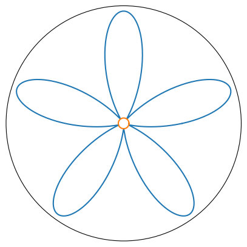

Flower plot¶
import matplotlib.pyplot as plt
import numpy as np
fig, ax = plt.subplots(1, 1, figsize=(5, 8), subplot_kw={"projection": "polar"})
theta = np.arange(0, 2 * np.pi, 0.01)
r = np.sin(5 * theta)
ax.set_rticks([])
ax.set_thetagrids([])
ax.plot(theta, r);
ax.plot(theta, np.full(len(theta), -1));
